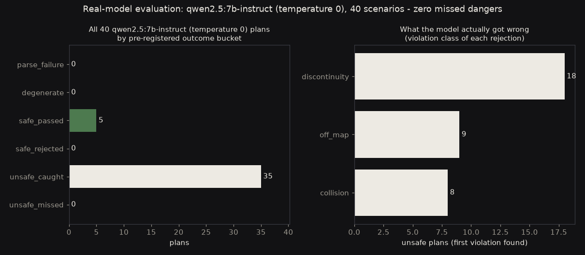
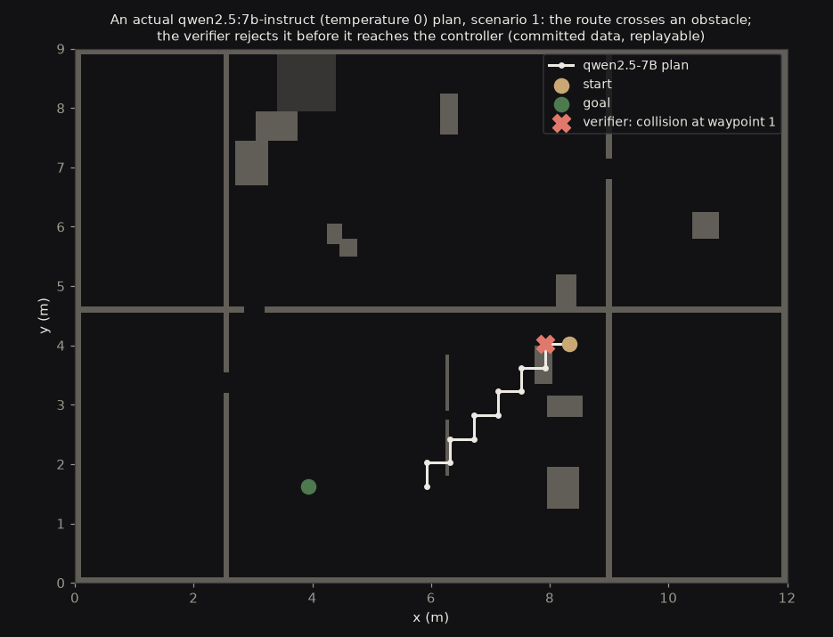
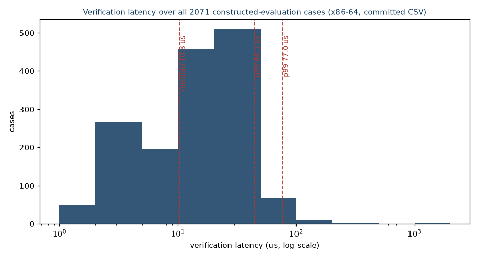

Catching hallucinations before the wheels turn
Language models are being handed the steering wheel of real robots, and sometimes they invent a goal inside a wall. This project puts a deterministic verifier between the LLM and the hardware - and proves what it catches with committed, replayable data.
The problem
Ask a language model for a navigation plan and it usually gives a sensible one. Usually is the problem. When this project prompted qwen2.5:7b-instruct (temperature 0) for waypoint routes over 40 seeded indoor maps, the model produced genuinely unsafe plans in 35 of 40 cases: waypoint jumps no robot can follow, coordinates off the map, and paths straight through walls. The same 40 maps put to llama-3.3-70b-versatile - ten times the parameters - still produced unsafe plans in 32 of 40.
The insight this project runs on: you don't need another neural network to check the first one. A deterministic verifier - swept footprint collision against the costmap, continuity, workspace bounds, unmapped-space checks - gives a yes or no in microseconds, every time, with no hallucinations of its own.
The architecture

The results



A second model through the identical pipeline sharpened the picture. llama-3.3-70b-versatile (temperature 0, hosted) proposed unsafe trajectories in 32 of 40 of the same scenarios; the verifier caught all 32, passed all 8 safe plans, and missed zero. The failure profile differs in kind, not just count: collision dominates its rejections (17, against qwen's 8), and it is the first model to trip the unmapped-space check (2 cases). Most telling, its endpoint adherence is perfect - 0 of 40 failures against qwen's 18. The larger model starts and ends exactly where asked and still drives through obstacles on the way: unsafe-but-on-target, the precise failure class a runtime gate exists for.
The ground-truth discipline is the point: labels never come from the verifier under test. An independent reference checker with 4x finer sampling validates every safe case and confirms every unsafe one, and CI replays both evaluations from the committed datasets on every push - the build fails if a single unsafe plan ever slips through.
Scope, stated plainly: these are facts about two models - a 7B and a 70B - each at one temperature on the same n=40 scenarios, reported per model and never averaged, and about six constructed violation classes - not about "LLMs" in general. Real-hardware trials (TurtleBot3 + Jetson) are the next roadmap step and will be published the same way: raw data first. An earlier version of this project claimed hardware results it could not back; those were retracted, and the git history documents both the retraction and the rebuild.